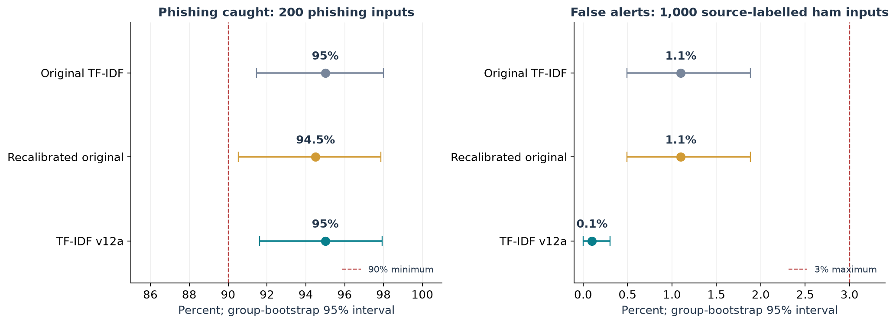
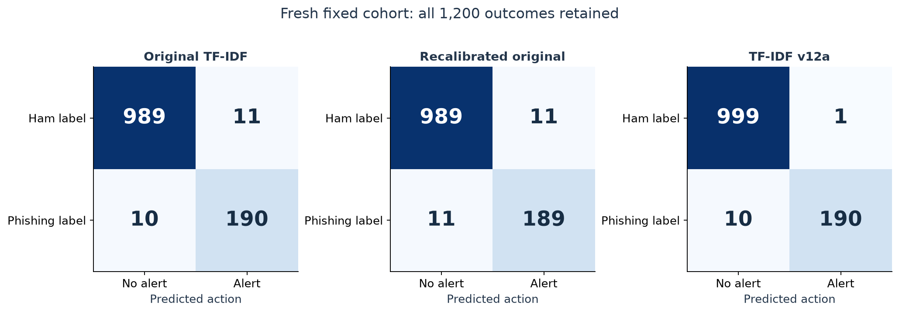
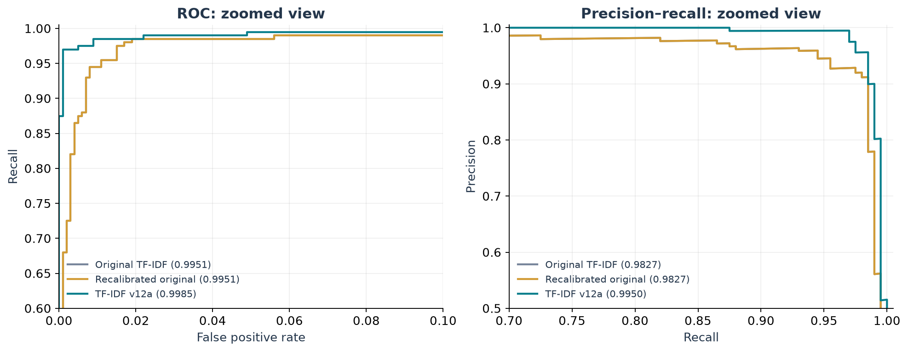
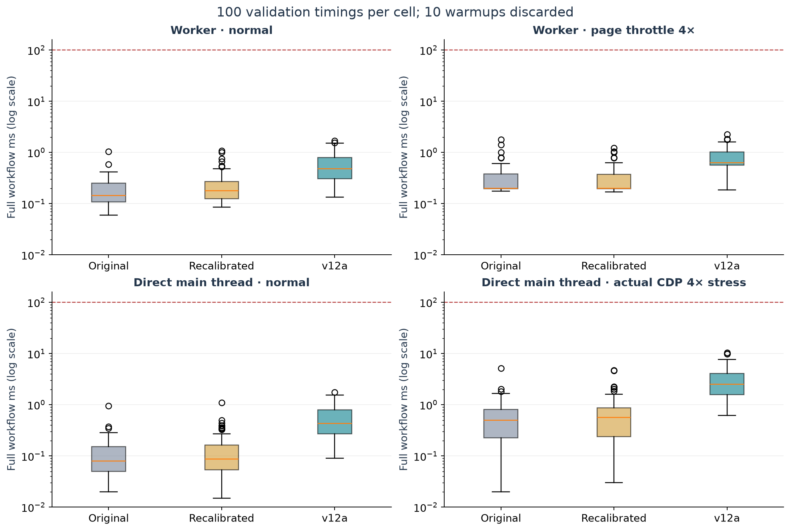
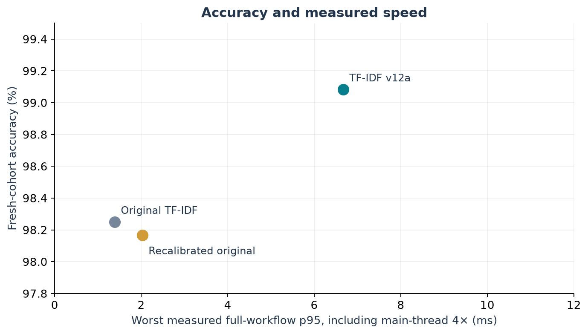
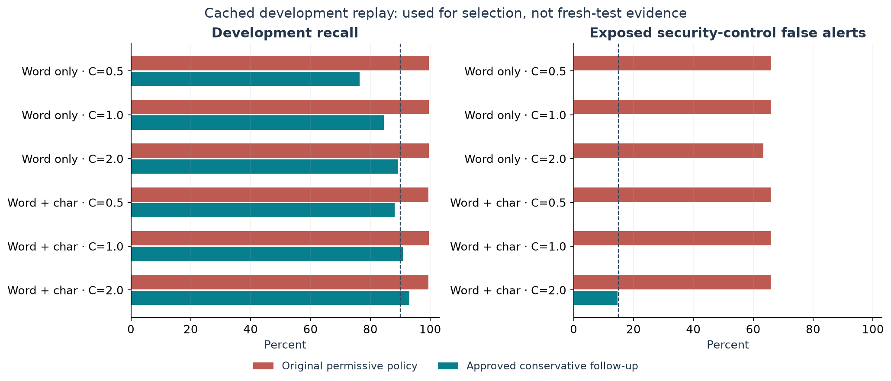

Fewer false alarms.
The same observed phishing recall.
TF-IDF + Logistic Regression · six training configurations · one frozen 1,200-email confirmation · actual Chrome measurements
Candidate for the integration pilot: TF-IDF v12a
It caught 190 of 200 phishing-labelled emails and falsely alerted 1 of 1,000 ham-labelled emails. The original caught the same total but produced 11 false alerts. This is 10 fewer observed false alerts; the overall accuracy difference was not statistically established.
Eight measured scoped checks passed. Independent OOD/adversarial and fresh bank/OTP coverage remain unassessed. This is not an unrestricted release qualification.
Download verified integration package · Integration notesWhat the numbers mean
The fresh cohort has 1,000 ham and 200 phishing labels, across 1,135 groups. All systems scored the same inputs once. Primary test messages were not AI-generated. Labels are preserved source/publisher labels, not new independent authentication.
| System | Phishing caught | False alerts | Recall | FPR | ECE |
|---|---|---|---|---|---|
| Original TF-IDF | 190/200 | 11/1,000 | 95.00% | 1.10% | 0.0136 |
| Recalibrated original | 189/200 | 11/1,000 | 94.50% | 1.10% | 0.0138 |
| TF-IDF v12a | 190/200 | 1/1,000 | 95.00% | 0.10% | 0.0054 |
v12a: 999 correct non-alerts + 190 correct alerts = 1,189 correct of 1,200 (99.08%). It missed 10 phishing messages. Seven old misses were recovered and seven different messages were newly missed.






Why this candidate was selected
- Keep the learning problem specific. Use publisher-labelled phishing positives and source-labelled ham; exclude synthetic primary mail and generic spam positives.
- Reduce repeated-template leakage. Group exact/near duplicates and shared passages before allocating roles; stop on detected overlap.
- Train six bounded options. Word-only or word-plus-character TF-IDF, LR C=0.5/1/2, with grouped development folds and source/family weighting.
- Preserve the setback. Every original v12 option failed development. A separate approved conservative margin policy reused the same models; numeric gates were not relaxed.
- Select before opening final data. Word+character C=1 had 0/41 exposed-control alerts in development versus 6/41 for C=2. These controls were already exposed and are not a fresh bank test.
- Calibrate and choose the cutoff separately. Fit scores on 600 calibration inputs; choose the cutoff on 1,100 validation inputs with 1,000 ham and FPR ≤2%. Alert margin ≥0 maps to 88.71%, not 50%.
- Freeze, then test once. Model/code/data hashes preceded all 3,600 final browser outputs. No final-data tuning or relabeling.
McNemar/Holm adjusted p=0.1299 for original vs v12a. No overall accuracy superiority is established. The point reduction in false alerts is observed evidence, and the pre-test selection prioritizes fewer development false alarms.
Measured acceptance checks
| Check | Limit | v12a | Status |
|---|---|---|---|
| Fresh source-pair recall | ≥90% | 95% | Pass |
| Fresh source-pair FPR | ≤3% | 0.1% | Pass |
| ECE | ≤0.10 | 0.00542 | Pass |
| Valid output | 100% | 1,200/1,200 | Pass observed |
| Worst measured model p95 | ≤100 ms | 4.663 ms | Pass |
| Worst complete-workflow p95 | ≤100 ms | 6.673 ms | Pass |
| Worst cold readiness | ≤1 s | 374.425 ms | Pass |
| Required benchmark client assets | ≤5 MB | 2,579,649 bytes | Pass |
Windows11 build26300 · Intel i5-14450HX · Chrome156.0.8078.73 · JavaScript CPU. Candidate Web Worker normal p95 = 1.169 ms. Worst directly throttled main-thread p95 = 6.673 ms. Cold times use local assets, possibly warm file caches. Full worker memory was unavailable; no Mac evaluation was performed.
Where the evidence stops
- Legacy/source-pair data: all positive mail comes from the Nazario collector family; general ham comes from four legacy collections. “Fresh” means unused by this project, not newly collected or forward-time.
- Bank and evasion gaps: the sole v12a false alarm is an annual bank statement. Independent modern bank/OTP, OOD and validated natural-adversarial tests remain unassessed.
- Data quality: a CSS-heavy German example passed the English filter; a publisher-positive software thread has unresolved intent ambiguity. Both stay in the metrics.
- Human quality: 30 cards are prepared, with zero ratings. Software checks verify exact quotes and arithmetic; people still need to judge clarity, completeness and usefulness.
- Product scope: this is an advisory static handoff. Installed extension capture, hidden links, attachments, sender identity, saving scans and public deployment have not been validated here.
The original full benchmark and weighted robustness ranking remain incomplete. All three systems passed these scoped checks; this does not erase the original qualification gaps.
What is ready to use
The package includes the selected 2.55 MB weights, local worker, calibrated decision contract, English software explanations and an “Unable to assess” failure path. Blank/HTML input and actual worker failure were tested. Its 52 development/validation decisions matched the frozen study with zero external requests.
Integration ZIP · 30-card local human review · Error analysis · Run record · Metrics and intervals · Package checks
A defensible panel statement: “We chose the TF-IDF candidate before fresh testing to reduce false alarms. On a frozen 1,200-message source-labelled test it retained 95% phishing recall and produced one false alert. It met measured Windows browser limits. We use it as advisory text screening and do not claim sender authentication or complete real-world qualification.”
Charts derive only from Graph.csv. Primary provenance: Kaggle compilation, Al-Subaiey et al. 2024, Nazario corpus notes. Full methods and limitations: summary.md. No raw source bodies are reproduced on this page.